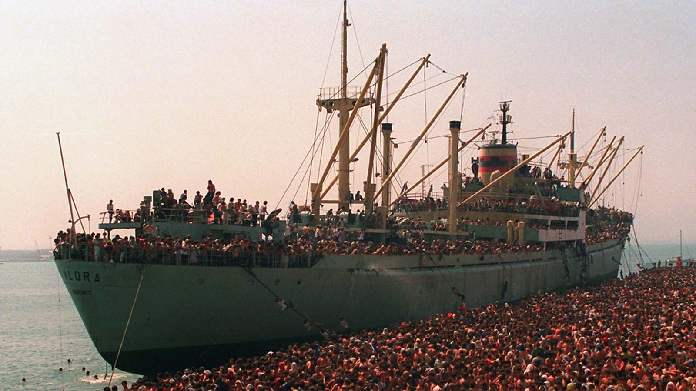
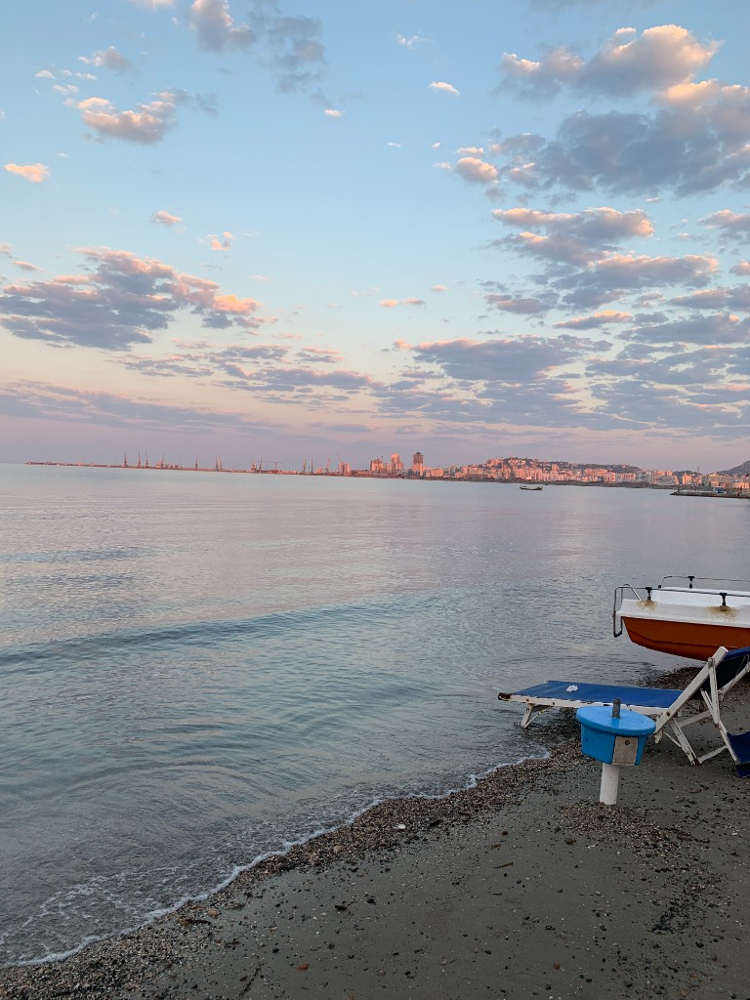

00A paradox I was born into
My father crossed the Adriatic in 1991, on the second of the ships that have since become almost mythological objects in Italian and Albanian memory. He stepped off in a southern Italian port among thousands of others, was photographed, processed, dispersed. I was born on the Italian side of that crossing. My Albania is therefore not a place of residence but a place of return: a summer country, a grandmother's kitchen, a coastline that fills with cars bearing Italian, Greek, German, Swiss plates every July and empties again in September.

This paper begins from a paradox that is both personal and statistical. Albanians, by most survey measures, exhibit some of the lowest levels of generalized interpersonal trust in Europe. They have left their country in numbers that are demographically extraordinary: roughly one in three Albanians lives outside Albania. And yet that same diaspora returns, every summer, in flows large enough to register meaningfully in the national accounts. People love a country they do not live in, send money to a society they do not trust, and rebuild houses they will not occupy. The question of this paper is how to make sense of that configuration, economically but also philosophically.
I want to argue that the apparent contradiction dissolves once we stop treating "belonging" and "residence" as the same variable. The Albanian case, more sharply than most, shows that a nation can be sustained (economically and affectively) from outside its own borders. The diaspora is not a deviation from the Albanian economy; it has become one of its structural components.
01Historical context: isolation, opening, collapse
To understand contemporary Albanian emigration one must begin earlier, with the regime of Enver Hoxha (1944 to 1985) and its successor period until 1990. Albania under Hoxha was, by the late 1970s, perhaps the most hermetically closed country in Europe: it had broken with Yugoslavia (1948), with the Soviet Union (1961), and finally with China (1978), and its borders were enforced by a domestic security apparatus and a network of concrete bunkers whose visible legacy still dots the landscape. Emigration was not merely restricted; it was punishable as treason.
This is the first thing to hold onto: the diaspora I belong to is historically compressed. It did not form over centuries, as the Italian or Irish diasporas did. It is essentially the product of a single generation, the one that found, in 1990 and 1991, that the door had suddenly opened.
When the regime collapsed, the response was immediate and disorderly. The first mass crossings to Italy occurred in March 1991, when roughly 25,000 people arrived in the ports of Apulia. The most iconic event came in August of the same year: the ship Vlora, originally carrying Cuban sugar, was overtaken in Durrës by approximately twenty thousand people and sailed to Bari, where Italian authorities, overwhelmed, confined the passengers in a stadium. My father was part of this wave. The images (bodies hanging from cranes, masts, every accessible surface of a single ship) are among the few photographs in postwar European history that are recognized immediately on both sides of the Adriatic.
A second decisive event arrived six years later. In 1997, a network of pyramid investment schemes, into which by some estimates around two-thirds of the Albanian population had placed savings, collapsed. The losses are conventionally estimated at roughly half of GDP. The state lost control of large parts of the country, weapons depots were emptied, and a second emigration wave followed. The 1997 collapse is, in my view, the most under-discussed event in any account of Albanian economic and social life. It is the empirical anchor of the trust problem I will discuss later: low trust in Albania is not a vague cultural attribute, it is something with a date.
02The scale of departure
The numerical scale of Albanian emigration is unusual among European countries that were not at war. Estimates vary by source and definition, but the orders of magnitude are consistent:
- Between 1991 and 2001, several hundred thousand people left, in a country of approximately three million.
- A further wave followed the 1997 collapse.
- A third, less visible wave accelerated after 2010 with EU visa liberalization (December 2010, Schengen short stay).
- Today, the Albanian origin population abroad is generally estimated between 1.2 and 1.6 million, against a resident population that has fallen below 2.8 million according to the 2023 census.
The Italian and Greek components dominate, with significant secondary populations in Germany, Switzerland, the United Kingdom, and the United States. Italy in particular has absorbed the largest share, and Albanians are by some measures the most demographically integrated post 1991 immigrant group in the country, a fact that contrasts sharply with the moral panic that surrounded their arrival in the early nineties.
For the purposes of an economic argument, the key point is that the resident Albanian economy has been shaped, since its first day of openness, by the existence of a non resident Albanian economy of comparable demographic weight. This is the structural fact from which everything else follows.
03Remittances, vacation flows, and the diaspora as macro input
The most measurable economic contribution of the diaspora is remittances. The World Bank has consistently classified Albania among the most remittance dependent economies in Europe. The share of remittances in GDP has fluctuated significantly: peaking above 20% in the early 2000s, declining as the diaspora aged and integrated abroad, and stabilizing in recent years between 8 and 10% of GDP. Exact figures should be drawn from the Bank of Albania balance of payments series for the year of writing.
A second, less studied channel is what your paper is right to focus on: vacation flows. Every summer, the diaspora returns. This is not tourism in the conventional sense; it is more accurately described as seasonal repatriation. The economic effects are several:
- Direct consumption (food, fuel, hospitality, retail) in the coastal regions and in places of origin.
- A construction sector that is overwhelmingly oriented toward houses that will be occupied for one month a year by emigrants and their children.
- Pressure on the lek through foreign currency inflows during summer months.
- An informal credit and savings circulation that runs alongside the official banking system.
In macroeconomic terms, diaspora vacation flows function as a partial substitute for foreign direct investment that the country, given its institutional environment, does not otherwise easily attract. They are also a substitute for export earnings: the diaspora effectively "exports" itself for eleven months and then "imports" euros each August.
A more recent and qualitatively important shift in diaspora financial behavior has been documented by Joniada Barjaba in her 2018 Sussex doctoral research. Drawing on fifty interviews with Albanian transnational entrepreneurs in Italy, Greece and Albania, she observes that a growing share of the diaspora is moving from consumption oriented remittances (supporting family households) toward investment oriented transfers (financing small businesses, both in the host country and at home). This matters for the macro picture: investment remittances have different multiplier properties from consumption remittances and, if the trend continues, would gradually reshape the structure of the diaspora's contribution to Albanian GDP.
There is a less comfortable layer to this picture that the paper should treat separately, with care. A portion of inflows into Albanian real estate over the past two decades has been linked, in international reporting and in Council of Europe documents, to illicit revenues from drug trafficking and laundering. This is a real phenomenon, with visible effects on construction in Tirana and on the coast, but it is methodologically distinct from remittances and from vacation flows, and it should not be conflated with them in the paper. To do so would weaken the argument and expose it to the accusation, common in Albanian political debate, of equating diaspora with criminality.
04The trust question
The European Values Study, the World Values Survey, and several Balkan Barometer rounds have consistently placed Albania near the bottom of European rankings on the standard generalized trust question ("Generally speaking, would you say that most people can be trusted...?"). The proportion of Albanians answering affirmatively is typically in the single digits, against European averages of 25 to 40% and Nordic averages above 60%.
It would be a mistake, however, to read this as a flat cultural fact. Two distinctions need to be made.
First, the distinction between generalized and particularized trust. Albanian society scores low on the former but extremely high on the latter: trust in family, in kin, in known persons, in fis (clan) networks where these still operate. This pattern is what Edward Banfield, in a famous and controversial 1958 study of southern Italy, called amoral familism: an orientation in which trust is dense within the family and thin outside it. The label is contested; the empirical pattern, in Albania, is not.
Second, the historical specificity already mentioned. A country whose population watched two thirds of its savings vanish in 1997, under the visible passivity (and in some accounts complicity) of the political class, does not produce low generalized trust as a primordial trait. It produces it as a learned response to a specific institutional failure that has not since been credibly repaired.
This matters for the diaspora question in the following way. Emigration in the Albanian case is not only an economic decision (wage differential) but also an institutional one: it is a response to a society in which the formal mechanisms of cooperation (courts, contracts, public administration, banks) are not reliably believed to function. It is, in Albert Hirschman's terms (Exit, Voice, and Loyalty, 1970), a case in which exit has historically dominated over voice, because voice has had no working channel.
The paradox the paper opens with can now be reframed. Loyalty, in Hirschman's model, does not require residence. It can persist alongside exit, and it is precisely this combination, exit plus loyalty, departure plus return, that the Albanian diaspora exhibits.
05Openness, currency, euroization
Albania operates a managed floating exchange rate regime. The lek has, over the past two decades, appreciated substantially against the euro despite a persistent current account deficit. The standard explanations point to:
- Remittance inflows (a structural supply of foreign currency).
- Tourism receipts, increasingly important since 2015.
- Real estate purchases by non residents, including diaspora and other foreign buyers.
- Limited but rising FDI in tourism, energy, and extractives.
The phenomenon to highlight is the de facto euroization of large parts of the Albanian economy: real estate is priced in euros, savings are often held in euros, large transactions are denominated in euros. The Bank of Albania has, in the past few years, taken explicit policy steps to deeuroize, with limited success. From a macroeconomic perspective, this is a textbook small open economy phenomenon in a country whose external sector (including its emigrant population) is denominated in a currency it does not issue.
The opening of the borders, in other words, did not only redistribute people. It also partially redistributed the monetary sovereignty of the country.
5.2 Remittances, inflation, and the question of net welfare
A complete account of remittance economics in Albania must address two questions that the preceding section left implicit: how much of the country actually depends on this money, and what does this dependence cost in prices? Both questions have answers that are unflattering to the optimistic reading.
According to research compiled by the World Bank in 2024, citing Bank of Albania survey data, 23 per cent of Albanian families depend on remittances, which constitute on average 18 per cent of their total income, with an average annual inflow of roughly 2,000 euros per family.1 The flows themselves are large and growing: total personal remittances reached 1.12 billion euros in 2024, the first time the figure crossed that threshold, and in the first half of 2025 transfers from abroad totalled 532 million euros, up 4.7 per cent year on year.2 For the families that actually receive money, the average annual transfer is closer to 8,300 euros, and remittances constitute about 41 per cent of total household income.3 Albania is not a country with a diaspora that occasionally helps out. It is a country in which roughly one household in four runs on euros sent by absent relatives.
This dependence carries a price that until recently was not properly quantified. Skufi, Papavangjeli and Geršl, economists at the Bank of Albania and Charles University, used a dynamic wage-price model on Albanian data from 2002 to 2022 to estimate the inflationary effect of both demographic decline and remittance inflows.4 Their results are sobering. A continuous decline in population of one per cent generates 98 basis points (0.98 percentage points) of inflationary pressure in the short run and 23 basis points in the long run. Remittances themselves add a further 18 basis points to annual inflation. Albania is therefore living with a structural inflationary engine driven not by monetary policy or external shocks but by its demographic and diasporic condition. Over a decade, the remittance contribution alone is worth roughly 1.8 percentage points of cumulative price rises, on top of whatever other inflationary forces are at work.
The mechanism is straightforward. Roughly 90 per cent of remittances received by Albanian families are spent on food and daily necessities, 36 per cent on health expenses and 30 per cent on education, while less than 2 per cent are devoted to business expansion or productive investment.3 The money flows almost entirely into non-tradable consumption: real estate, groceries, services, schooling, healthcare. The supply side of these sectors cannot expand as fast as the demand, both because productivity in non-tradable services is intrinsically slow to grow and because the productive labour force is precisely the cohort that has emigrated. The Balassa–Samuelson logic applies in reverse: the country imports demand without the corresponding domestic productivity, and prices in the non-tradable sector adjust upwards.
There is then a final twist that compounds the welfare arithmetic. The lek has appreciated almost continuously against the euro since 2016, reaching roughly 95 lek per euro in mid-2026, its strongest level since records began. The Bank of Albania has estimated that the appreciation of the lek translates into a real loss of about 5 per cent for remittance-receiving families: the same 100 euros sent home in 2020 now converts into noticeably fewer lek, while the local prices those lek must cover have continued to rise.5 The macroeconomic apparent good news, a strong domestic currency, is in fact eroding the real disposable income of precisely the households that depend on the diaspora most.
A balanced assessment must therefore set positive and negative effects against each other. On the positive side, remittances are credited with an eight-percentage-point reduction in poverty, particularly for families that depend on them entirely;1 they sustain household consumption during shocks, they cover much of the trade deficit, and they support the current account in a country whose tradable export base remains thin. On the negative side, they add measurable inflationary pressure each year, they distort the labour market by lifting reservation wages above what domestic firms can pay, they channel almost nothing into productive investment, and they interact with lek appreciation to gradually erode their own real value for recipient households.
The net judgement, supported by the most recent evidence, is that remittances function as a short-term stabiliser that becomes a long-term structural drag. They keep families above the poverty line today while quietly raising the cost of staying in Albania tomorrow. The two regions with the highest dependence on remittances, Kukës and Dibra, are also the two poorest, and 26 per cent of Albanian families that receive money from abroad still have less disposable income than the rest of the population.5 The flows that the country needs are also the flows that make it harder for the country to develop the conditions under which those flows would no longer be needed.
This is the deeper sense in which the Hirschmanian frame applies. Exit, in the form of emigration, finances the survival of those who stay; but the very mechanism by which it does so reinforces the conditions that make exit rational for the next generation. The remittance is not a transitional support toward eventual self-sufficiency. It is a structural feature of an economy that has organised itself around its own departure.
- World Bank, From Reliance to Leverage: Transforming Albania's Remittance Landscape for Economic Empowerment, Brief, 15 July 2024, citing Bank of Albania research. worldbank.org
- Albanian Times, "Albania sees steady rise in remittances, boosting economy", September 2025, citing Bank of Albania quarterly statistics.
- INSTAT/Bank of Albania Survey on Migration and Remittances 2025, as reported in Scan TV (March 2026): "Sa peshon rekordi i remitancave në shtëpitë shqiptare". Survey covered roughly 22 per cent of Albanian families with a current emigrant member and 20 per cent with at least one returned migrant.
- Skufi, L., Papavangjeli, M., and Geršl, A. (2024). "Migration, Remittances, and Wage-Inflation Spillovers: The Case of Albania." Working Paper IES 2024/5, Charles University Prague. Authors Skufi and Papavangjeli are economists at the Bank of Albania; Geršl is at Charles University.
- Bank of Albania quarterly statistics and analysis, as cited in Telegrafi, "Remittances reach 1 billion euros in Albania, a quarter of families depend on income from the diaspora", March 2025.
06Why the emigrants do not return
Russell King, the leading scholar on Albanian migration, has called return migration "the great unwritten chapter in the history of migration" (King 2000, cited in Barjaba 2018). The Albanian case is, in this sense, a chapter still being written. The economics of non return are straightforward and well documented:
- Wage differentials remain large. A construction worker in Italy or Germany earns several times what the same worker would earn in Tirana or Vlorë, and far more than in rural regions.
- Pension entitlements accrued abroad are not portable in ways that would make return financially neutral.
- Children of the diaspora (my generation) are educated abroad, hold non Albanian passports, and have labor market access in the EU that pure resident Albanians do not.
But the non economic factors are at least as important, and they bring us back to trust.
- Institutional quality remains low. Corruption indices place Albania consistently among the weaker European performers. Court enforcement is slow and uncertain.
- Healthcare and education systems are perceived as inadequate by the diaspora, even when objective indicators show improvement.
- The 1997 wound, transmitted as family memory, has not closed.
The result is a self reinforcing equilibrium. Those who would have the human and financial capital to demand institutional improvement (voice) have exercised exit instead, weakening the constituency for reform. Those who remain are disproportionately those with the fewest resources to exit. The diaspora's relationship to the country becomes affective and seasonal rather than political and continuous.
This is the equilibrium I was born into. It is not, I think, a stable one: the diaspora's second and third generations are losing the language, the network density, the family home anchor. The question of whether Albania can transition from a remittance and vacation economy to a residence economy before the diaspora dissolves into its host countries is the open question of the next twenty years.
07A counterfactual: what if the diaspora came back?
The previous section described an equilibrium in which exit dominates voice and the diaspora's relationship to the country is structurally seasonal. It is worth asking, as a thought experiment with macroeconomic teeth, what would happen if this equilibrium broke. Suppose a substantial fraction of the diaspora (say, several hundred thousand people across a decade) chose to return and live in Albania rather than to visit it. Comparative experience and basic open economy reasoning let us sketch two scenarios. They are not predictions; they are the upper and lower envelopes of a plausible range.
7.1 The optimistic scenario: return as growth driver
The favourable case rests on five mechanisms.
Human capital repatriation. Returnees would bring back not only savings but, more importantly, work experience accumulated in higher productivity economies: Italian construction firms, German manufacturing, Swiss services, Greek tourism management. International evidence (Ireland in the 1990s, Spain and Portugal after EU accession, parts of Poland post 2010) suggests that productive return can lift average productivity meaningfully when returnees enter the labour market rather than retire into it.
Demographic correction. Albania is aging and depopulating faster than almost any country in Europe outside the war zones. The 2023 census revealed a resident population below 2.8 million, against roughly 3.1 million a decade earlier. A return wave concentrated in working age cohorts would restore the age pyramid, stabilize the pension system, and expand the domestic consumer market.
Institutional pressure ("voice" reactivated). This is the most important and least quantifiable channel. Returnees with EU expectations of public administration, courts, healthcare, and procurement transparency become a domestic constituency for reform. In Hirschman's terms, the population that had exercised exit re enters voice. This is what happened, in different forms, in Ireland and in the Baltic states after accession.
Capital deepening. Repatriated savings shift from short cycle vacation consumption (a hotel stay, a restaurant meal, fuel) toward longer cycle investment: business creation, equipment purchase, formal employment, productive real estate rather than empty summer houses.
Network and trade effects. A returnee led economy retains commercial ties to Italy, Greece, Germany, Switzerland. Albanian SMEs gain bilingual managers, EU contacts, and access to supply chains. Tourism, agriculture, and IT services are the most plausible beneficiaries.
In this scenario, the structure of GDP shifts. Remittances as a share of GDP fall (returnees no longer send money to themselves), but this is more than offset by domestic value added. The current account dependency on transfers diminishes. The lek pressure from remittance inflows eases, which actually helps tradable sector competitiveness. Albania moves from a remittance and tourism economy toward a more conventional small open economy growth model. By the end of the decade, GDP per capita could plausibly close part of the gap with EU peripheral economies.
7.2 The pessimistic scenario: return as shock
The unfavourable case is not the absence of the optimistic case; it is a distinct trajectory in which return happens but its composition and timing are wrong.
Adverse selection, but not the one most people assume. It is tempting to write that the historical pattern of Albanian return is dominated by retirees. The data say otherwise. The most systematic survey available, conducted by INSTAT and the International Organization for Migration over the period 2009 to 2013 (and analyzed in Barjaba 2018), found that some 139,000 Albanians aged 18 and over returned to Albania in those five years, with the modal age between 25 and 29 and the dominant range between 18 and 34. Only about 6 percent of returnees were aged 60 or above. The pessimistic scenario is therefore not "retirees come home to spend pensions"; it is something harder. Around 71 percent of returnees came from Greece and 24 percent from Italy, and 88 percent cited unemployment in the host country as their primary reason for returning. Almost half of the returnees remained unemployed in Albania. This is the actual adverse selection: working age people forced back by crisis abroad into a labour market that has no place for them. The human capital injection in such a wave is real on paper but blocked by the absence of productive demand.
Public finance and reintegration strain. Even when the returnee cohort is young rather than old, the pressure on Albanian public services is significant. Barjaba's empirical chapter on reintegration documents a healthcare system already weak in funding, infrastructure, and supplies, absorbing additional users without additional resources. Returnee children, especially the second generation born or raised abroad, often arrive with weak or absent Albanian language skills and struggle in a school system that operates only in Albanian. The fiscal and administrative weakness of the receiving country becomes a tax on the return itself.
Remittance substitution loss. This is the cleanest macroeconomic risk. Remittances are, on average, almost entirely spent in Albania. The income a returnee earns in Albania is typically lower than the remittance the same person was sending. If a working age emigrant returns and takes a domestic job, the net inflow to the Albanian economy falls. The country can lose GDP from successful return, in the short term, before the productivity and investment effects compensate.
Real estate and cost of living inflation. Diaspora driven price pressure is already visible in Tirana, Vlorë, Sarandë, and along the Ionian coast. Mass return would accelerate this. Non diaspora residents (the population that did not emigrate, which is on average poorer) would face price increases without corresponding wage increases. Social tension between "those who left and came back with euros" and "those who stayed" is already audible in Albanian political discourse and would intensify.
Dutch disease, in a lighter form. Large euro inflows to purchase property and finance return would further appreciate the lek, weakening the price competitiveness of the few exporting sectors Albania has built (textiles, agro processing, call centres). The macroeconomic logic is the same as in resource rich economies, with the diaspora playing the role of the oilfield.
Institutional disappointment and re emigration. This is the most worrying scenario. If returnees arrive expecting EU standard institutions and find Albanian ones, the disappointment is sharper than the original emigration: it is informed disappointment, made by people who have lived under functioning systems. Barjaba's interviewees describe encounters with bureaucratic corruption that are characteristic of this disappointment, including the report of a returnee being asked to pay roughly 3,000 euros to obtain a job in a local public institution. A fraction will re emigrate, often taking their Italian or German born children with them. The country loses not only the returnees but, more painfully, the next generation that had been culturally available.
7.3 What separates the two scenarios
The two scenarios differ on three variables, and only three.
First, who returns. A return wave dominated by working age people with EU work experience produces the optimistic outcome; a wave dominated by retirees and disappointed mid career professionals produces the pessimistic one. The Albanian government has limited tools to shape this composition, but tax policy, professional licensing recognition, and pension portability are levers that matter.
Second, what they find. The optimistic scenario requires that institutional reform precedes or accompanies return. Without it, return becomes the pessimistic scenario by the third or fourth year. This is the single hardest political problem.
Third, macroeconomic management of the transition. The remittance substitution loss is real and unavoidable in any successful return. The state needs fiscal capacity to absorb the shock, which means, paradoxically, that the country needs to be in better fiscal shape before return accelerates than it is today.
The honest synthesis, then, is this: return migration is not automatically good for the Albanian economy. It is conditionally good, on terms that the country does not yet meet. The risk is not that the diaspora will refuse to come back. The risk is that it will come back to a country that is not ready to receive it productively, and that the disappointment of that return will be more demoralizing than the original departure.
08Philosophical coda: belonging without residence
I want to close on the question that motivated this paper, which is not strictly economic.
We are accustomed, in political theory and in everyday speech, to treat the nation as a community of people who live together in a defined territory. The Albanian case stretches this definition almost to the breaking point. A non trivial fraction of the people who are Albanian, in any meaningful sense, do not live in Albania, have not lived there for thirty years, and yet maintain Albanian as a language, build Albanian houses, marry within Albanian networks, and return each summer to a country whose institutions they do not trust and whose residence they have refused.
Benedict Anderson's formulation of the nation as an "imagined community" is useful here, but it understates the materiality of the Albanian case. The Albanian nation is not only imagined from abroad: it is financed from abroad. Remittances and vacation flows are not symbolic acts; they are line items in the balance of payments. The imagined community has a current account.

What this suggests, finally, is that we may need a category somewhere between citizenship and residence to describe what the diaspora actually does. People love a country and do not live there because love and residence have, in this case, decoupled, not as a failure of either but as the structural outcome of a specific history: a closed country that opened too suddenly, a savings system that collapsed too completely, an institutional environment that has not yet earned back the trust it lost, and a generation of emigrants whose children (my generation) inherit both the love and the distance.
The paper's title question, how is it possible to love a country and not live in it, turns out to have an answer that is neither sentimental nor cynical. It is structural. We love it the way one loves something that one's own history has placed at a precise, measurable distance.
References
Cited and used directly
- Barjaba, J. (2018). Exploring Transnational Entrepreneurship Among Albanian Migrants and Returnees. PhD thesis, School of Global Studies, University of Sussex (supervisor: Prof. Russell King). Sussex Research Online: http://sro.sussex.ac.uk/
- INSTAT and International Organization for Migration (2013). Return Migration and Reintegration in Albania.
- Hirschman, A. O. (1970). Exit, Voice, and Loyalty: Responses to Decline in Firms, Organizations, and States. Harvard University Press.
- Anderson, B. (1983). Imagined Communities: Reflections on the Origin and Spread of Nationalism. Verso.
- Banfield, E. C. (1958). The Moral Basis of a Backward Society. Free Press.
- King, R. (2000). "Generalizations from the history of return migration", in B. Ghosh (ed.), Return Migration: Journey of Hope or Despair?, IOM and UN.
Recommended for additional empirical depth
- World Bank, Migration and Remittances Factbook (most recent edition).
- Bank of Albania, Balance of Payments statistical reports.
- INSTAT (Albanian Institute of Statistics), 2023 Census results.
- King, R. and Vullnetari, J. Albania: A Country Profile of International Migration, and subsequent joint papers from 2003 onward.
- Vehbiu, A. and Devole, R. La scoperta dell'Albania. Paoline.
- European Values Study, latest wave.
- Council of Europe and MONEYVAL reports on Albania.